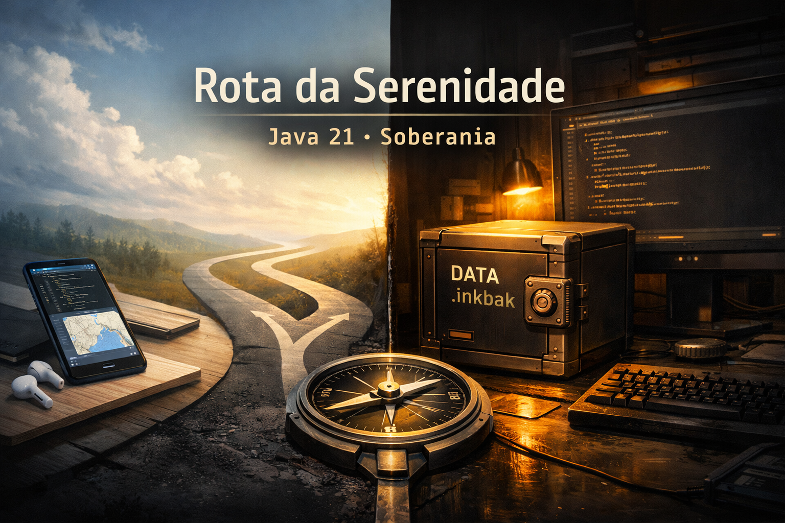

A Rota da Serenidade: Da Descoberta à Soberania Técnica em Java 21
Introdução: Escolher Não É Abandonar
Quem acompanha a Cara Core sabe: não somos reféns de uma única stack. Em artigo anterior, descrevemos a transição para o Flutter com os olhos abertos para a volatilidade do mobile, para a falta de LTS, para a "corrida dos ratos" em gerência de estado. Entramos mesmo assim, aplicando rigor de engenharia onde a maioria aceita o caos. Foi uma descoberta valiosa.
Mas descoberta não é destino. E quando o produto em questão é uma agenda para estúdios de tatuagem — dados sensíveis, continuidade do negócio, zero margem para "o app sumiu porque a nuvem caiu" — a pergunta que nos fizemos foi outra: qual rota oferece soberania real ao cliente?
Escolhemos com serenidade. Sem rancor com o Flutter, sem fanfarra contra ninguém. Apenas a conclusão honesta: para este produto, neste momento, a rota da soberania técnica passou por voltar ao que nunca deixou de ser nosso DNA — a JVM, o desktop nativo, os dados no computador do usuário.
1. O Que a Descoberta no Flutter Nos Ensinou
O artigo sobre Flutter e Java EE não foi um adeus. Foi um mapa. Aprendemos que aplicar Clean Architecture, inversão de dependência e testes determinísticos em qualquer ecossistema reduz risco e prolonga a vida do software. Aprendemos que "app" não é só UI — é sistema na borda da rede, com modo offline, sincronização e hardware limitado.
Também aprendemos que, para um certo tipo de cliente — o profissional que depende da agenda para faturar, que não pode perder um histórico de anos, que quer o arquivo de backup na mão — a promessa de "uma lógica, várias plataformas" pode ser secundária. O que importa é: os dados são meus? O sistema funciona sem internet? Posso restaurar tudo com um arquivo que eu guardei?
Quando essas perguntas passaram a guiar o desenho do produto, a resposta técnica mudou. Não por moda. Por alinhamento.
2. A Rota que Tomamos: Soberania de Ponta a Ponta
O Agenda Ink nasceu como aplicativo Windows em Java 21 e JavaFX 21. Persistência em SQLite no computador do usuário (%AppData%\Local\CaraCore\AgendaInk). Nenhum servidor obrigatório. Nenhum login em nuvem para o núcleo do negócio. O tatuador abre o app, agenda, controla finanças e exporta um dossiê — um arquivo compactado (.inkbak) — para guardar em pendrive ou nuvem por conta dele.
Cofre de Segurança: O Arquivo que o Cliente Controla
Em vez de "backup em nossa nuvem", oferecemos Exportar Dossiê de Dados. O usuário gera um único arquivo com data no nome (backup_2026_05_30.inkbak), guarda onde quiser e, se um dia precisar, usa Restaurar Dossiê. A aplicação valida que o dossiê pertence àquela máquina ou licença (vinculação por HardwareID), evita que um banco de um estúdio seja aberto em outro sem autorização, e restaura com uma cópia de segurança automática (agenda.db.bak) antes de qualquer substituição. Tudo com streams fechados corretamente, sem arquivos presos. Rigor industrial.
O aviso "Backup há mais de 7 dias" no arranque não é marketing. É lembrete técnico para o dono do negócio não esquecer a continuidade. A mensagem é objetiva, em português, sem emojis. Tom de segurança bancária.
Arquitetura Soberana: Uma Lógica, Um Executável
Java 21 com Virtual Threads permite que a compactação do dossiê e a verificação de integridade rodem em background sem travar a interface. O fluxo de agendamento (Orçamento → Pago → Sessão → Aftercare) e o Aftercare inteligente (alertas em 3 e 30 dias) seguem a mesma disciplina de domínio que defenderíamos em qualquer stack: entidades claras, repositórios por contrato, regras testáveis.
A diferença é que aqui não há dependência de pacotes voláteis nem de backend obrigatório. O instalador Windows (.exe) é gerado com jpackage, autocontido: o usuário não precisa instalar Java. Primeiro acesso cria o banco e vincula a máquina em silêncio. Mensagem de boas-vindas: "Soberania Técnica ativada. Agenda Ink pronta para operação."
// A mesma disciplina: resultado como tipo, falha explícita
Result<Path> result = BackupService.exportDossier(db);
if (result.isSuccess())
showConfirmation("Dossiê exportado. Mantenha em local seguro.");
else
showError(result.getFailureMessage());Nada de exceções silenciosas. Nada de "funciona na minha máquina". Documentação técnica em RELEASE_NOTES e manual de backup semanal para o tatuador manter a continuidade do negócio. É a mesma mentalidade do artigo 68: tratar o software como sistema que dura.
3. Serenidade Como Método
Serenidade não é passividade. É não decidir por hype, por pressão de "todo mundo está em X", ou por medo de "ficar para trás". A Cara Core experimentou o Flutter com rigor, documentou a experiência e, para um produto cujo valor central é soberania dos dados e previsibilidade, escolheu a rota em que a JVM e o desktop nativo ainda são referência: LTS de anos, um único runtime no controle do usuário, um arquivo .inkbak que ele guarda e restaura quando quiser.
Essa escolha não invalida a outra. O texto sobre Flutter e Java EE continua verdadeiro: aplicar disciplina enterprise no mobile é possível e desejável. Mas nem todo produto é mobile-first. Nem todo cliente quer depender de sincronização em nuvem para o coração do negócio. Para o Agenda Ink, a rota da serenidade foi a da soberania técnica no desktop.
Citamos de propósito a conclusão do artigo 68. Porque a lição é a mesma: a diferença entre software que falha e software que sobrevive não é a linguagem. É a disciplina de engenharia e a honestidade sobre para quem e para quê você está construindo.
Conclusão: Duas Rotas, Uma Disciplina
Resumindo: em janeiro contamos como levamos a seriedade do Java EE ao Flutter. Em maio, contamos como escolhemos, com serenidade, a rota do Java 21 e do JavaFX para um produto cujo coração é a soberania dos dados do estúdio. Ambas as narrativas são de descoberta. Ambas recusam o código rápido e sujo. Ambas entregam software como arma de precisão — seja no bolso do usuário, seja na mesa de trabalho.
A Cara Core não "voltou atrás". Ajustou o rumo com base no problema real. Esse é o caminho da soberania técnica: decidir com calma, documentar com clareza e entregar com rigor. Sem emojis. Sem fanfarra. Só engenharia.
Hashtags
Contato
- E-mail: suporte@caracore.com.br
- Site: www.caracore.com.br
- LinkedIn: Cara Core Informática
Conecte-se conosco no LinkedIn para mais conteúdos sobre arquitetura de software, engenharia e soberania técnica!
Seguir no LinkedIn
Artigo publicado em 30 de maio de 2026
© 2026 Cara Core Informática. Todos os direitos reservados.